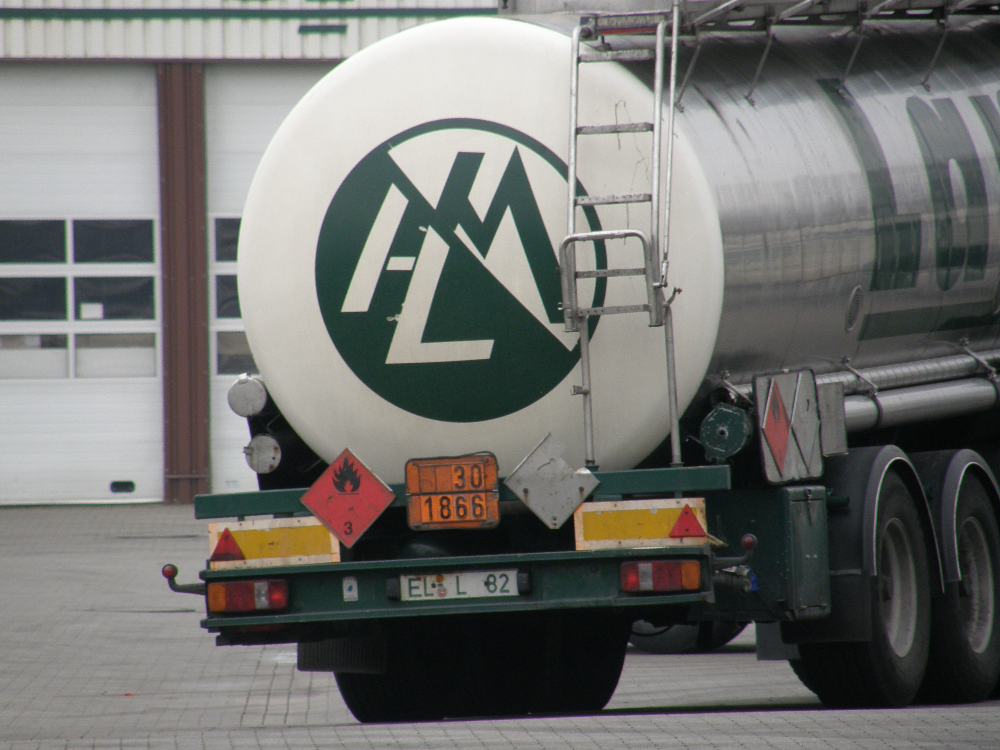
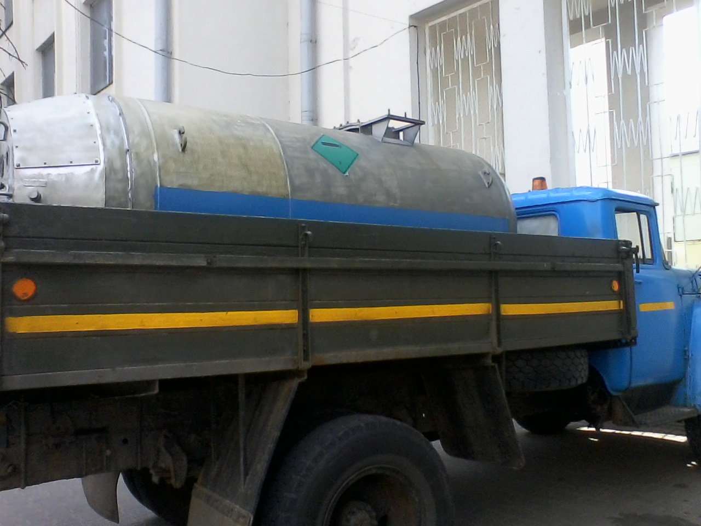
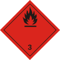
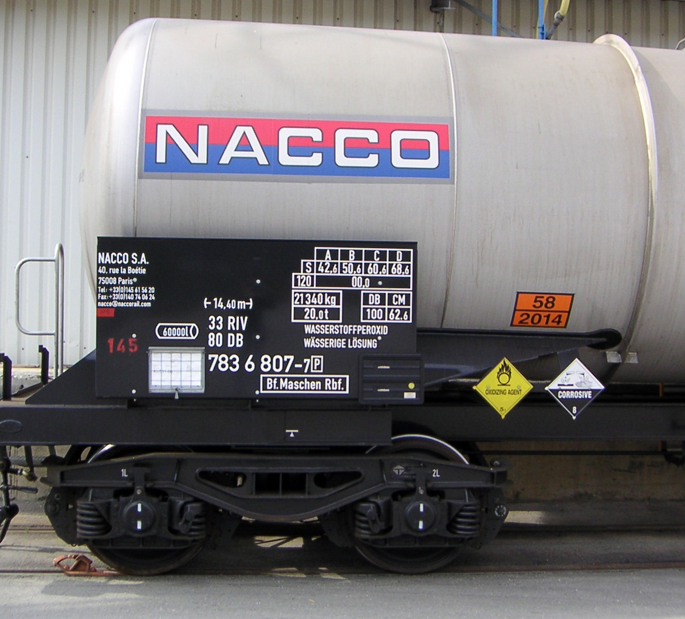
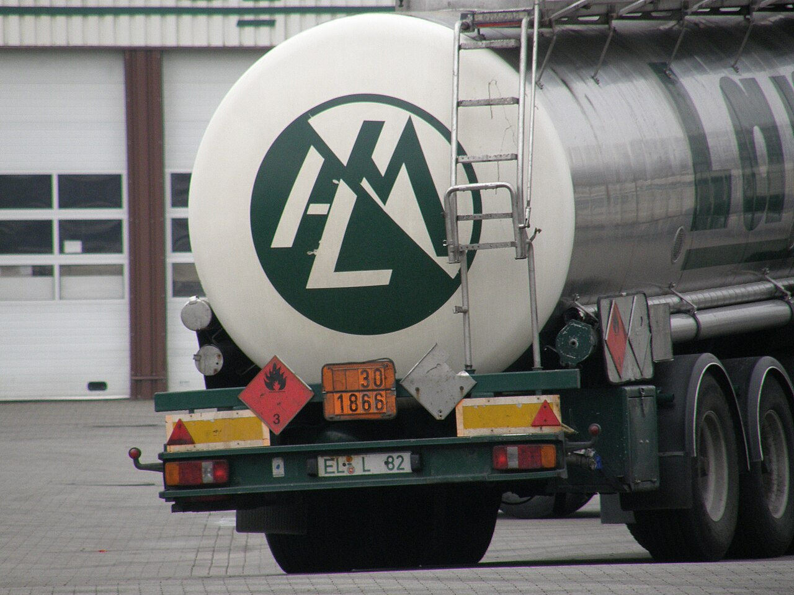
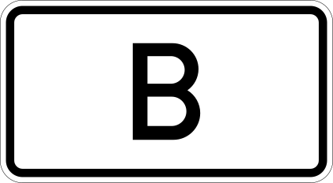
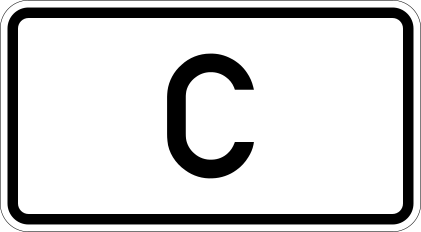
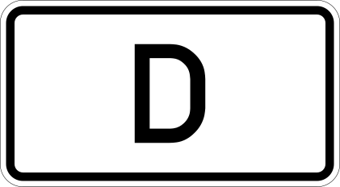
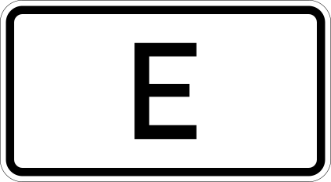

Категорія A
Низький ризик
Обмежень для НВ немає. Дорожній знак на в'їзді не встановлюється — тунель вважається відкритим для всіх дозволених ADR-вантажів.
МІЙ КУРС
Перевезення небезпечних вантажів за стандартами ADR / ДОПНВ, включно з 1 класом (вибухові речовини та вироби). Сертифікований автопарк, водії ADR та міжнародні маршрути Україна — Європа.
Небезпечні вантажі
ADR (Accord européen relatif au transport international des marchandises Dangereuses par Route) — європейська угода про міжнародне автомобільне перевезення небезпечних вантажів. В Україні ці вимоги реалізуються через Закон «Про перевезення небезпечних вантажів» та правила ДОПНВ.
ТОВ «МІЙ КУРС» здійснює перевезення небезпечних вантажів ADR, включно з 1 класом (вибухові речовини та вироби). Сертифікований автопарк, водії з сертифікатом ADR та міжнародні маршрути Україна — Європа.

Класифікація
Натисніть на картку, щоб розгорнути додаткову інформацію. Кожен вантаж ідентифікується за класом, номером ООН та групою упаковки.
Стиснені, зріджені та розчинені під тиском гази. Потрібні спеціальні балони або цистерни.
Рідини з низькою температурою спалаху. Найпоширеніший клас у дорожніх перевезеннях.
Легкозаймисті, самозаймисті та речовини, що виділяють гази при контакті з водою.
Речовини, що посилюють горіння інших матеріалів, та органічні пероксиди.
Отруйні речовини та інфекційні матеріали, небезпечні для здоров'я людей і тварин.
Матеріали з іонізуючим випромінюванням. Потрібні спеціальні дозиметричні контролі.
Кислоти, луги та інші речовини, що руйнують шкіру, очі та матеріали контейнера.
Речовини та вироби, що не входять до класів 1–8, але становлять небезпеку при перевезенні.
Візуальний довідник
Фото з відкритих джерел (Wikimedia Commons) ілюструють реальні умови ADR-перевезень.




Розділ 1.9.5 ADR
Кожен тунель отримує категорію A–E за рівнем ризику. На в'їзді встановлюють дорожні знаки, що забороняють проїзд певним вантажам ADR.
Категорію тунелю визначає дорожній орган країни після оцінки ризику. Для кожного вантажу в графі 15 таблиці A ADR вказано код обмеження (наприклад, (D/E) або (—)). Водій порівнює код вантажу з категорією тунелів на маршруті.
Для небезпечних вантажів маршрут, включно з тунелями, погоджується з Національною поліцією. Базовий знак заборони для НВ — C, 3h (Віденська конвенція).
Низький ризик
Обмежень для НВ немає. Дорожній знак на в'їзді не встановлюється — тунель вважається відкритим для всіх дозволених ADR-вантажів.

Обмежений
Знак із літерою B забороняє проїзд вантажам з кодом (B) у графі 15 — а також суворіші категорії C, D, E.

Помірний ризик
Знак C обмежує вантажі з кодами (C), (C/D), (C/E) та всі суворіші категорії.

Високий ризик
Знак D — заборона для вантажів, що можуть спричинити великий вибух, пожежу або токсичний викид. Коди (D), (D/E).

Найсуворіший режим
Знак E — майже повна заборона НВ, крім позицій із (—) у графі 15. Діє також на великі партії вантажів згідно розділу 3.4 ADR.
Знаки: C, 3h (CC BY-SA 4.0), таблички категорій B–E — StVO Німеччини (Wikimedia Commons).
1 клас ADR
Найбільш регламентований вид перевезень. Кожна позиція ідентифікується за номером ООН, групою сумісності та класифікаційним кодом.
1 клас ADR охоплює вибухові речовини та вироби, здатні спричинити вибух, пожежу або інші небезпечні наслідки за наявності певних факторів.
Для 1 класу використовуються ТЗ категорій EX/II та EX/III з дійсним свідоцтвом допуску, виданим після технічного огляду.
Базовий сертифікат ADR + спеціалізована підготовка для вибухових матеріалів. Без кваліфікації перевезення 1 класу заборонене.
Конкретні вимоги залежать від номера ООН, кількості, групи сумісності та маршруту. Потрібна індивідуальна консультація.
Вимоги
ТЗ з дійсним свідоцтвом допуску ADR. Для 1 класу — EX/II або EX/III.
Сертифікат з додатками. Для 1 класу — спеціалізована підготовка.
Узгодження з уповноваженими органами для вантажів підвищеної небезпеки.
Накладні, інструкції, дозволи на ВР, страховий поліс.
Сертифікована тара, знаки небезпеки, помаранчеві таблички.
Обов'язкове страхування відповідальності та план дій при інциденті.
Процес
Повний цикл — від ідентифікації вантажу до звітності після розвантаження.
Визначаємо клас, номер ООН, кількість та групу сумісності.
Обираємо ТЗ з відповідним допуском ADR, перевіряємо технічну готовність.
Готуємо документи, узгоджуємо маршрут і дозволи з уповноваженими органами.
Контролюємо ВРР, маркування та моніторинг руху на маршруті.
Безпечне розвантаження та передача повного пакету документів.
Довідники
Нормативна база та довідкові матеріали для самостійного вивчення вимог ADR/ДОПНВ.
FAQ
ADR — міжнародна угода (Європа та країни-учасниці), ДОПНВ — українська назва правил дорожнього перевезення небезпечних вантажів, що імплементують вимоги ADR у національне законодавство. На практиці обидва терміни описують однакові стандарти безпеки.
Ні. Перевезення вибухових матеріалів вимагає обов'язкового погодження маршруту з Національною поліцією України, а також дозволу на перевезення ВР — залежно від типу вантажу.
Чотирицифровий номер ООН (наприклад, UN 1203 — бензин) однозначно ідентифікує речовину в Переліку небезпечних вантажів. Від нього залежать вимоги до упаковки, маркування, обмежень кількості та сумісності при завантаженні.
ADR класифікує тунелі категоріями A–E. На в'їзді встановлюють знаки заборони з літерами B–E залежно від категорії. Детальніше — у розділі «Тунелі та обмеження маршруту». Маршрут погоджується з поліцією.
Так, ми організовуємо перевезення небезпечних вантажів ADR, включно з 1 класом. Для кожного класу підбирається відповідний транспорт, водій та пакет документів. Зв'яжіться з нами для індивідуального розрахунку.
Контакти
Пн–Пт: 9:00–18:00
Сб: 9:00–15:00
Україна, м. Київ
Підберемо транспорт, узгодимо маршрут і підготуємо документи для вашого небезпечного вантажу.